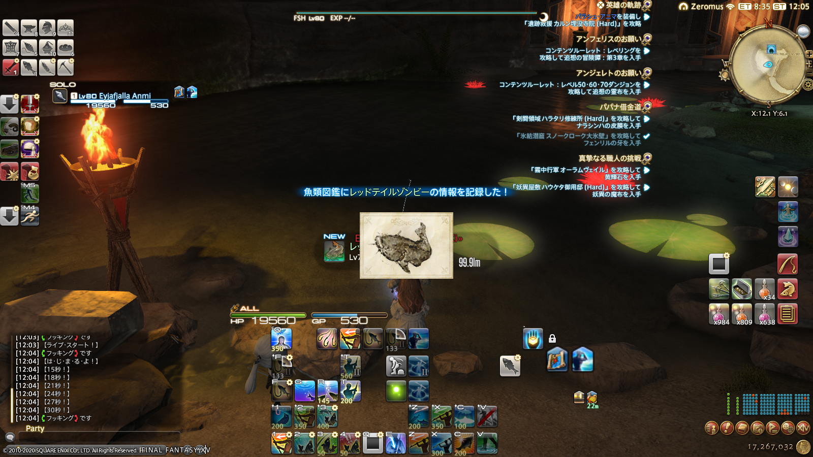

今天并没怎么钓鱼王呢。
发现到了惋惜之晶遗迹的鱼皇的窗口期的时候已经开始3分钟了，急忙登入游戏飞到白亚的宫殿赶过去
结果最后只成功抛了一杆，结果当然是没咬

不过把这个老东西给钓上来了还不错，这个也是脱了好久的一生之敌了
嘛正好来统计一下一些梦里的成就大概还差多久才能做完？
可靠的前辈 144/2000（导师辞了，不打导随
太公望之路 187/204（对红龙人形自走究极神兵
孤独的挑战者 120/200（120层等于还没开始挑战呢，大佬做攻略都不讲151层之前的
孤高的挑战者 0/100（死宫是相当于没开始但是天柱是真的没开始
传说的怪物猎人 2021/3000（A）606/2000（S）摸就完事了，懒得去蹭狩猎怪
盘上的军略家 1/4（打NPC的LoVM真的很简单，只是要记得参加）